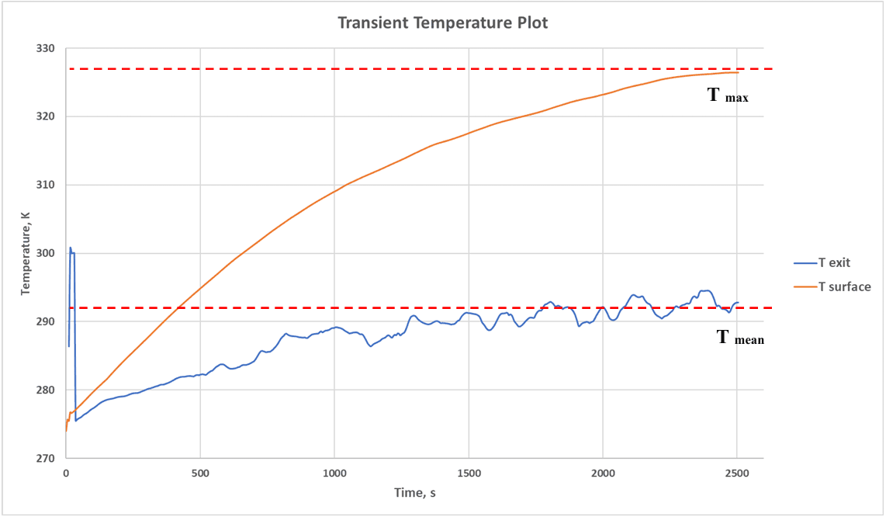

Standard
MIL-E-5400 / MIL-STD-5400
Three funded programmes (2020–present) qualifying airborne electronics LRUs mounted in conditioned and unconditioned aircraft bays, across altitude, Mach number, duty cycle, and engine bleed-flow settings.
Line-replaceable units (LRUs) — the electronics boxes that get swapped in and out of an aircraft — have to keep their internal components within safe thermal limits across the aircraft's entire operating envelope: every altitude, Mach number, bay type (conditioned or unconditioned), and engine bleed-air setting. Pakistan Air Force's Airworthiness Certification Authority requires that thermal design be qualified against MIL-E-5400 before an LRU is cleared for a platform.
Across the three AEROFLUX programmes, I ran both analytical and computational (Ansys Fluent) aerothermal analysis of LRUs in conditioned and unconditioned bays, at 30% and 100% duty cycle, for the full Mach/altitude combinations relevant to each platform, under ISA and user-defined atmospheric conditions. Where full CFD sweeps across the whole flight envelope were impractical, I applied a response-surface based design-of-experiment (DoE) method, then built a high-fidelity MATLAB algorithm using the DoE-generated data to predict temperature across the complete flight regime without re-running CFD for every point — the basis for the MIDEC method later published at ICASET/Springer.
Every computational result was validated against environmental thermal-chamber test data before being used to qualify the design.



Outcome: thermal designs for three LRU generations qualified under MIL-E-5400 for PAF's Airworthiness Certification Authority, with the underlying response-surface method later formalized and published (see Research). The most thermally critical condition — slow-speed, high-altitude flight at 1% engine bleed — was identified and used to set design margins.